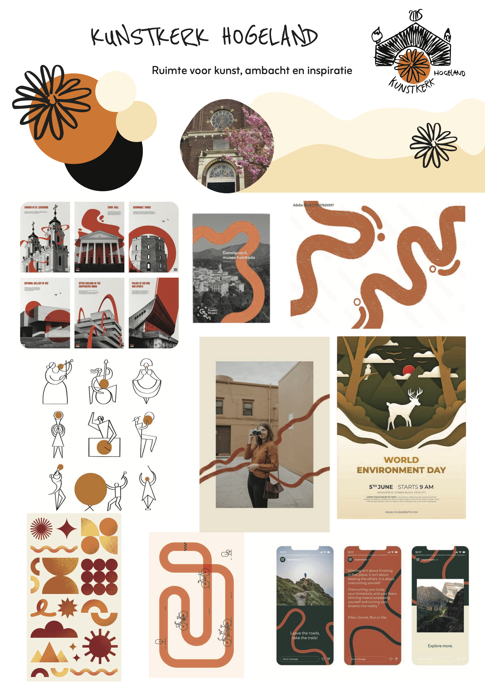
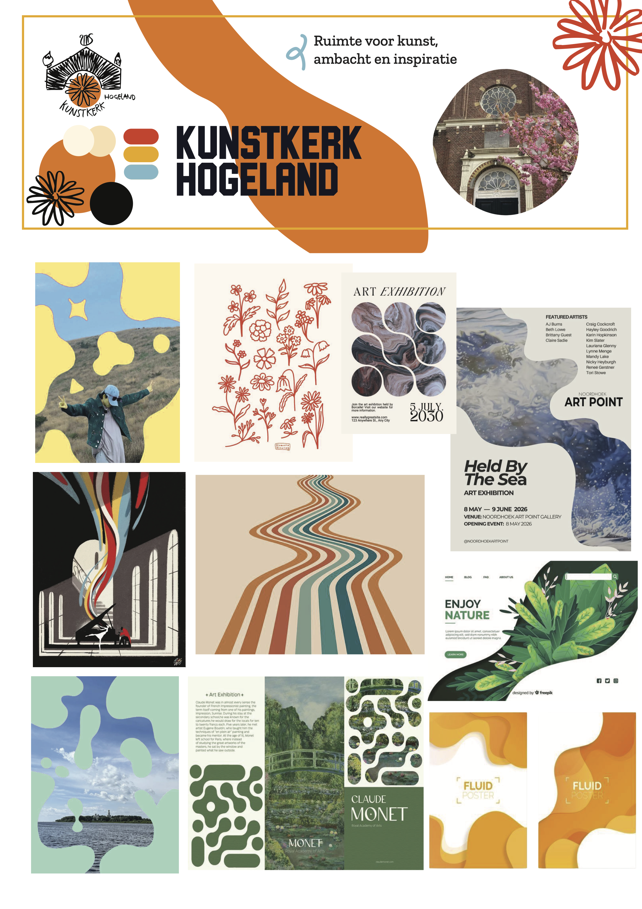
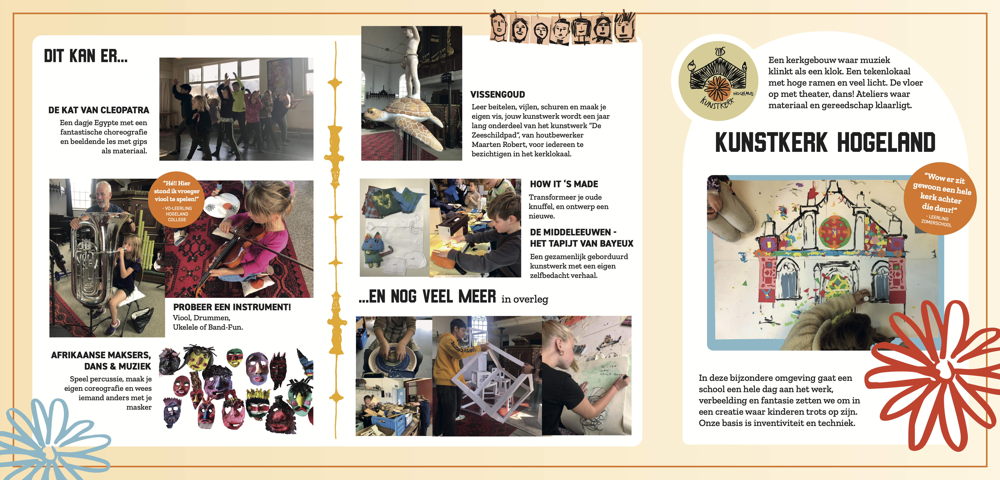
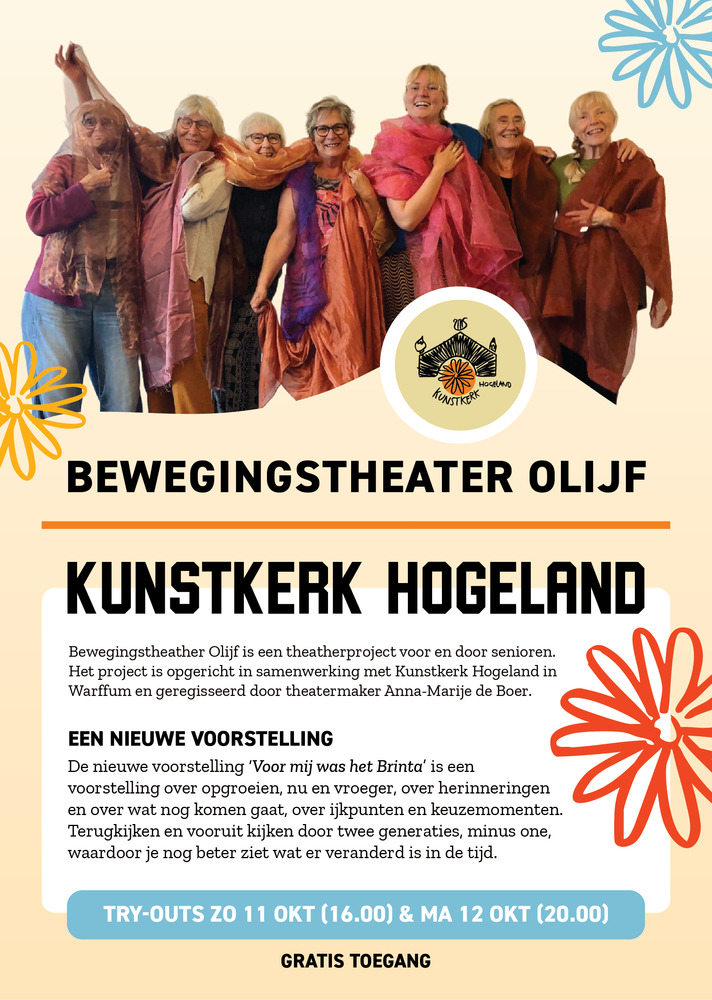
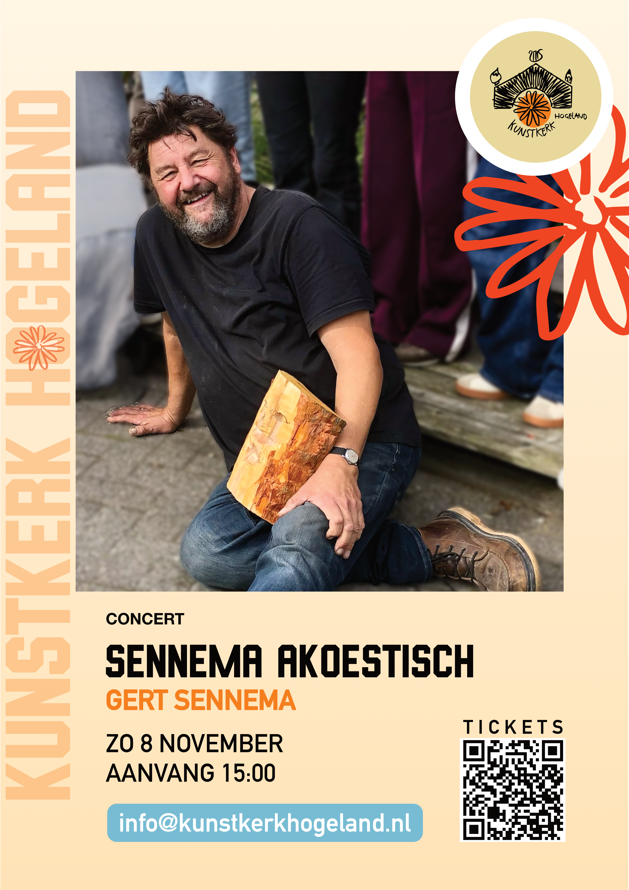
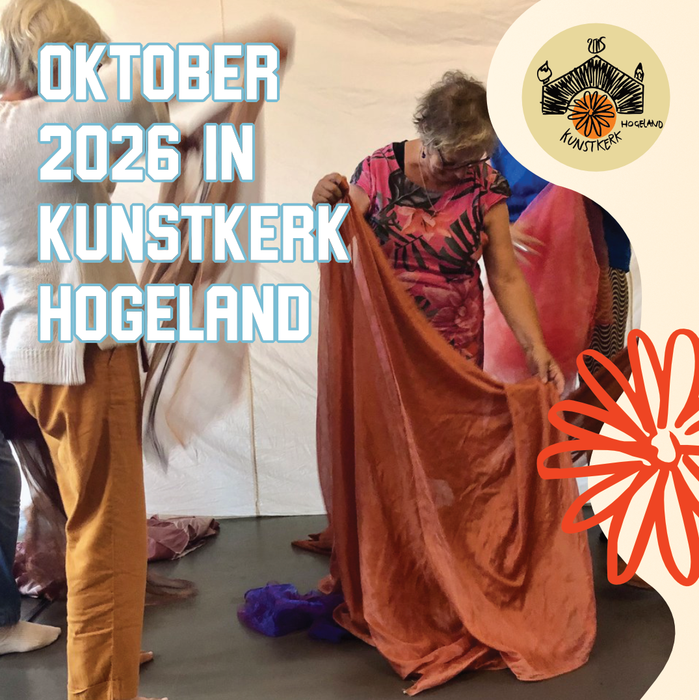
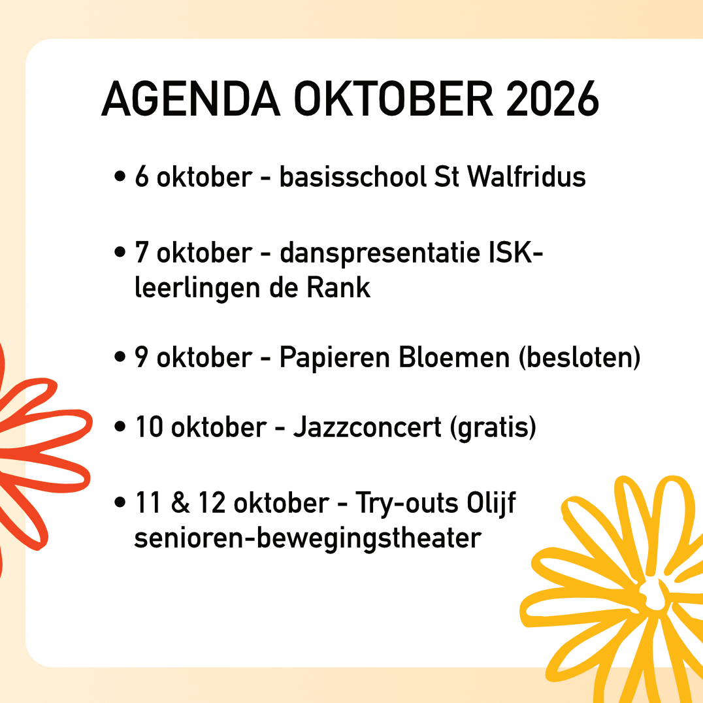

Kunstkerk Hogeland
Vormgeving en Marketing (MDT deelproject)
Augustus 2026 - heden
In augustus (2026) ben ik begonnen aan een MDT (verruim je blik) deelproject bij Kunstkerk Hogeland omdat ik na het afronden van mijn opleiding graag bezig wil blijven met vormgeving en communicatie. Tijdens dit project ben ik bezig met een vernieuwende professionaliseringsslag van de vormgeving en marketing bij de Kunstkerk. Hierin is mijn doel om het maken van media uitingen laagdrempeliger en consistenter wordt voor Kunstkerk directeur Gerrie Jonker (en mogelijke toekomstige MDT’ers).

Tijdens dit deelproject heb ik een nieuwe styleguide gemaakt voor media
uitingen van de Kunstkerk. Met de richtlijnen binnen deze styleguide kan er
een consistente vormgeving aangehouden worden bij het maken van o.a.: flyers,
posters, stickers, en social media posts.
Voor het maken van een eerste versie van de styleguide oriënteerde ik me
eerst op de bestaande vormgeving van de Kunstkerk en maakte ik moodboards met
mogelijke richtingen om te delen met directeur Gerrie Jonker. Met deze moodboards
werden mijn concepten en inspiratie gedeeld om vroeg in het project keuzes te kunnen
maken over de vormgeving. Op deze manier werd de kunstkerk meegenomen in beslissingen
over hun vormgeving.




Met behulp van de gemaakte heb ik met input van Gerrie Jonker flyers gemaakt voor
kunsteducatie en culturele activiteiten. Ik ben nu bezig met het vormen van templates
(in Affinity) en een protocol bij het maken van deze uitingen zodat het consistent
gemaakt kan worden en toekomstbestendig is voor de Kunstkerk.




